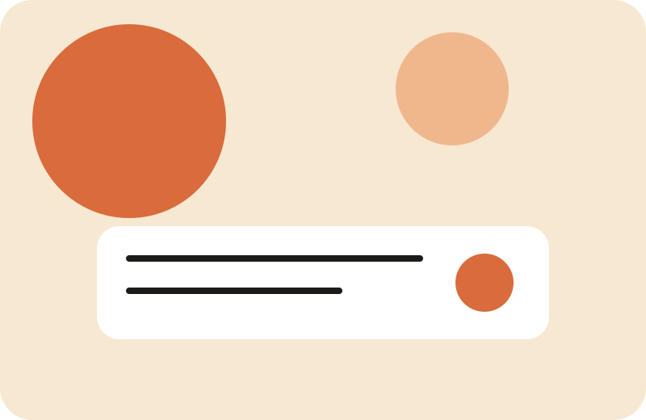

Айдентика кофе-бренда
Логотип, упаковка, визуальный язык для линейки с локальными ингредиентами.
Здесь живёт компактное портфолио: главная страница, страница «Истории» и страница «Ателье». Каждая с разным настроением, но с общей палитрой и визуальным ритмом.

Логотип, упаковка, визуальный язык для линейки с локальными ингредиентами.
Собрали UI‑кит, цветовые ключи, иллюстрации и лендинг для команды.
Упростили ключевые сценарии и разработали аккуратные сценарии onboarding.
Напишите, если нужен понятный визуальный язык или портфолио под запуск.